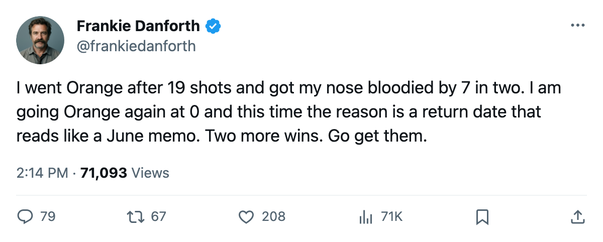

TOR
TORDANFORTH: Code Orange, the 0 I cannot explain, and a return date that reads like a goodbye
I said I was wrong to go Orange after 19 shots. The team scored 7 in the next two. Then they scored 0 and lost their best player.
 Frankie DanforthColumnist · Queen City Telegram
Frankie DanforthColumnist · Queen City Telegram
Code Orange

I went Yellow on Friday and I stand on it. The team won two on the road, Petr Chlup87 [1000815] was the centre I have been asking for since October, and 7 goals in 2 games is the kind of number that makes a man feel foolish for his worry. Then tonight they put 0 up at home, and  Marian Gaborik99 [308] is not coming back this spring.
Marian Gaborik99 [308] is not coming back this spring.
The return date is 2005-06-02. Read it again. That is after this series could possibly end, after the draft, after the league's calendar has moved on to other things. The ankle came between the 26th and the 28th, and the league will tell you it does not record how. I do not need to know how. I need to know that 55 goals and 99 points are watching from a training-room table while we try to close out a series on the road.
What the lineup says without him
 Rick Nash85 [364] is on the first power-play unit now. That is a 20-year-old carrying PP1 minutes with 22 goals and 17 assists in 69 games, 13.1 minutes a night.
Rick Nash85 [364] is on the first power-play unit now. That is a 20-year-old carrying PP1 minutes with 22 goals and 17 assists in 69 games, 13.1 minutes a night.  Darcy Tucker79 [1015] dressed for the first time since early April after 3 games that produced 1 goal and 0 assists.
Darcy Tucker79 [1015] dressed for the first time since early April after 3 games that produced 1 goal and 0 assists.  Ramzi Abid80 [245] moved to the first-line winger role, which is where his 20 goals and 46 assists say he belongs, and
Ramzi Abid80 [245] moved to the first-line winger role, which is where his 20 goals and 46 assists say he belongs, and  Stanislav Chistov87 [518] went back to the fourth line.
Stanislav Chistov87 [518] went back to the fourth line.
The second centre is still Chlup. He is 19 years old. He has 33 goals and 26 assists in 71 games at $2.34M with 2 years left. The Development Index has him at his base. The Book says 86 overall, 95 potential. I do not have questions about him anymore. I have questions about whether a 19-year-old carries the 2C minutes in Game 7 with his team's top scorer on the shelf through June.
The Meter
I am at Orange. Here is why. Toronto leads 3-2. Game 6 is at Pittsburgh on Monday, a building where the Penguins won Game 1 of this series and where  Mikael Renberg77 [827] is waiting. Game 7, if it comes, is 2005-05-04 at home. The Maple Leafs have been outshot 38-23 in at least one game this series. Tonight they managed zero goals in regulation at home.
Mikael Renberg77 [827] is waiting. Game 7, if it comes, is 2005-05-04 at home. The Maple Leafs have been outshot 38-23 in at least one game this series. Tonight they managed zero goals in regulation at home.
But I am not at Red. The regular-season record against Pittsburgh is 7-1-0.  Roberto Luongo95 [593] has a 1.90 GAA and a .948 save percentage across this postseason.
Roberto Luongo95 [593] has a 1.90 GAA and a .948 save percentage across this postseason.  Gary Roberts85 [841] has 11 points in 9 playoff games.
Gary Roberts85 [841] has 11 points in 9 playoff games.  Mats Sundin92 [961] is healthy and playing 20.3 minutes a night. The fourth line is not a tax this spring, it is a weapon.
Mats Sundin92 [961] is healthy and playing 20.3 minutes a night. The fourth line is not a tax this spring, it is a weapon.
I went Orange after 19 shots and the team answered with 7 in two. I am going Orange at 0 goals and I am telling you why: because the 0 came without the man who scored 55 of them all season, and because I have been here before and I know how this ends when the answer stops coming.
The series is 3-2. Two more wins. Go get them without the 99-pointer.
